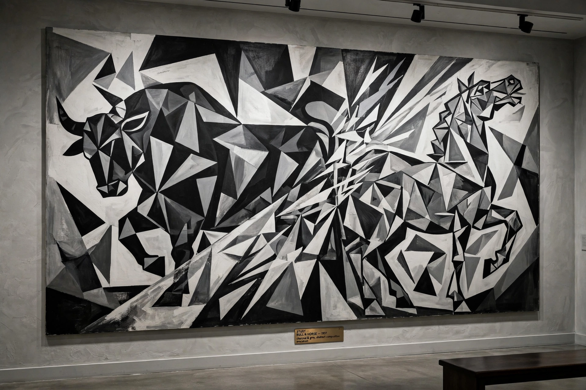

From Wikipedia, the free encyclopedia
| Guernica (Picasso) | |
|---|---|
| Artist | Pablo Picasso |
| Year | 1937 |
| Medium | Oil on canvas, 3.49 × 7.77 m |
| Location | Museo Reina Sofía, Madrid |

Guernica is a large oil painting by Pablo Picasso, completed in June 1937 in response to the bombing of the Basque town of Guernica by Nazi German and Italian Fascist aircraft on 26 April 1937 during the Spanish Civil War. Painted in black, white and grey, it shows a bull, a screaming horse, a mother with a dead child and other figures of suffering.
Commissioned for the Spanish pavilion at the 1937 Paris World's Fair, the painting toured to raise awareness and funds, then spent decades at MoMA in New York until it returned to Spain in 1981, after democracy was restored — as Picasso had stipulated. Housed in Madrid's Museo Reina Sofía, it has become a universal anti-war symbol; Picasso's broader career began with movements such as Cubism.